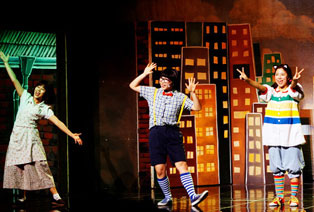

조회수 많은 글 공영주차장 설치 – 제안 받습니다! 주차할 공간이 없어 어려움을 겪진 않으셨나요? 도심주변 ‘주차할 수 있는 공간(노상)’을 알려주시면 현장조사 후, 주차장을 만들어 드리겠습니다. 설치가 가능한 경우, 관계법령 검토와 관계... 2016년 제1회 서울시민 희망광고 소재 공모 서울시는 보유중인 홍보매체를 개방하여 영세한 소상공인, 전통시장, 장애인기업, 여성기업, 사회적기업, 공유기업, 협동조합과 공익을 목적으로 하는 비영리법인·단체에 무료광고를 지원... 2016년 서울시민대학 학습매니저 모집 서울시는 급변하는 현대 사회에서 시민들의 살 자리와 일 자리를 지키는 원동력은 배움에서 나올 것이라 믿습니다. 배움을 통해 길러진 시민력은 서울을 키웁니다. 천만 시민의 학교가 될 서울시
추천정보 서울시 문화행사 정보 서울시내 곳곳에서 매일매일 벌어지는 월 평균 1,000건 이상의 문화행사를 지역별, 장르별, 시기별로 클릭 한 번에 검색할 수 있는 '서울문화포털'을 이제 스마트폰으로도 만날 수 있다. 시청사 통통투어 2012년 10월에 새롭게 태어난 서울시 청사는 한국 전통가옥의 처마를 재해석한 친환경적 건물로 직원들이 근무하는 사무공간과 시민들이 즐기고 참여할 수 있는 다양한 체험과 볼거리를 제공하고 당신만의 서울 속 힐링 명소, 어디까지? 하루하루 바쁘게 돌아가는 도시에서 살다보면 갑갑한 일상을 잊을 수 있는, 마음의 특별한 평온이 되는 거처에 대한 동경심을 누구나 한번쯤 가져 보게 된다.
문화행사 안내 2015-05-13 오즈를 찾아 아빠, 엄마와 함께 떠난 여행 그동안 화려하고 역동적으로만 보이던 서울 안에도, 아름답고 고즈넉한 공간이 많이 있다는 것을 알리는 계기가 될 2015-05-15 구름빵 동요 콘서트에 놀러 온 귀요미들을 만나다! 2천년 서울의 역사와 풍류가 흐르는 한강. 물로 이루어진 역사책인 한강의 이야기를 들어보세요.  2015-05-17 8월 공연 <브레멘 음악대> 관람 후기 - 책에서만 보던 동물들이 뮤지컬을 보러 가기 전날 다소 지친 몸으로 퇴근을 했습니다. 현관문을 열었는데 브레멘 음악대 동화책을 열심히 읽고
TV 끄고 나가자 2015-05-13 <미술관이 된 구벨기에 영사관>展, <미디어아트 ‘빛·공간> 남서울미술관의 건축적, 예술적 가치를 재해석하는 <미술관이 된 구벨기에 영사관>展, 빛이 주는 아름다움을 느끼는 2015-05-15 <도성일관>展, <경희궁>展 19세기 한양도성의 모습을 생생하게 만나볼 수 있는 <도성일관>, 경희궁의 위상과 역사성을 살펴보는 전시, <경희궁> 등을 소개합니다. 2015-05-17 패션과 예술의 경계를 허무는 아티스트 <헨릭 빕스코브> TV끄고 나가자 12편: 패션과 예술의 경계를 허무는 아티스트 <헨릭 빕스코브>전, 천만 서울시민이 주인공